단원
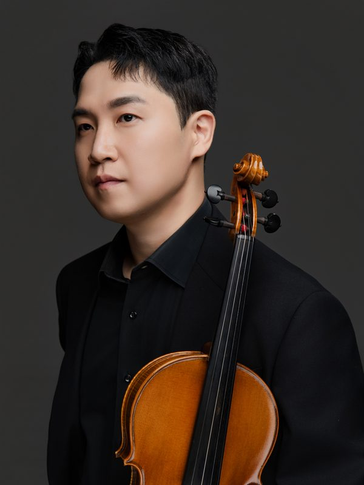
Viola
공동대표
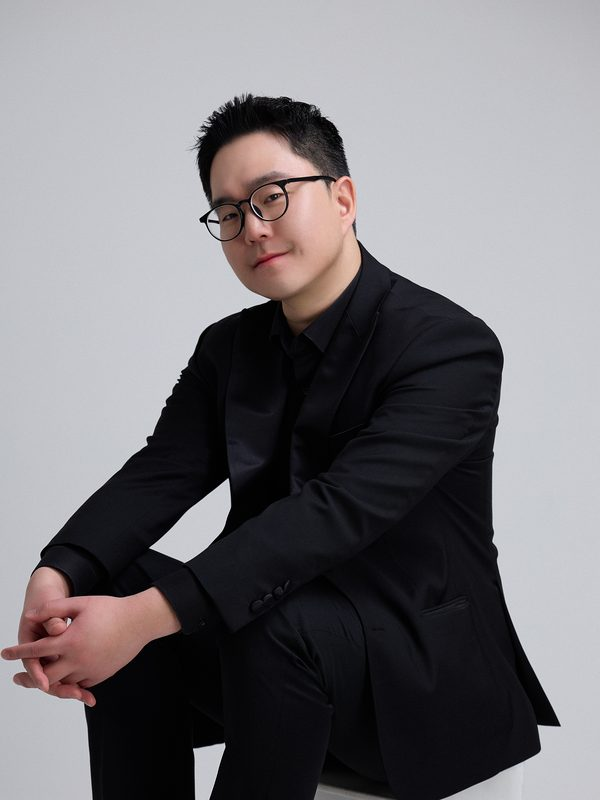
Piano
공동대표
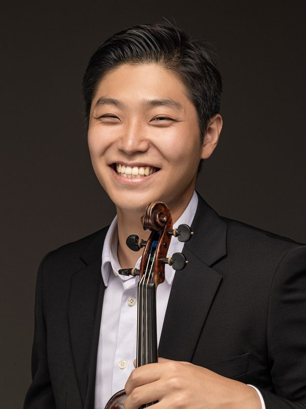
Violin
독일 주요 오케스트라 객원 악장
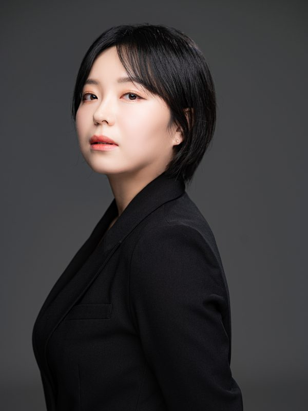
Violin
한국소리챔버오케스트라 악장
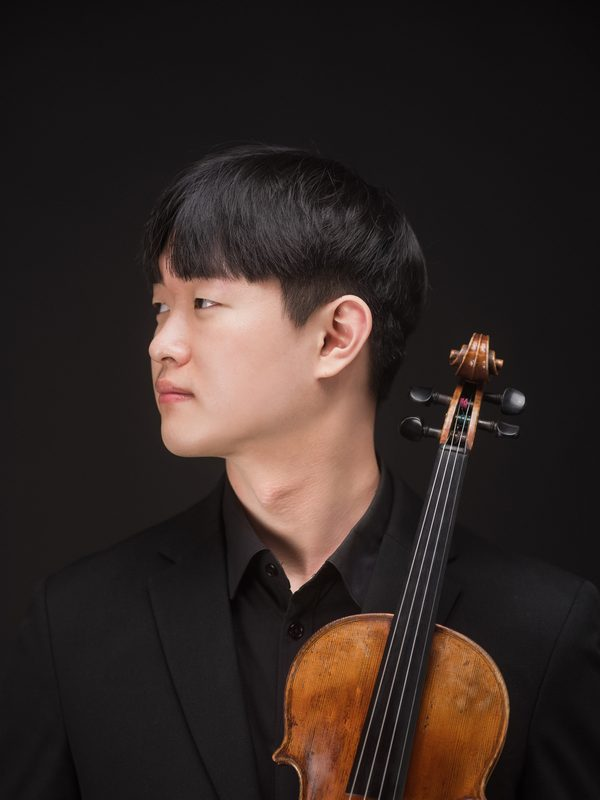
Violin
Ensemble BOAZ 단원
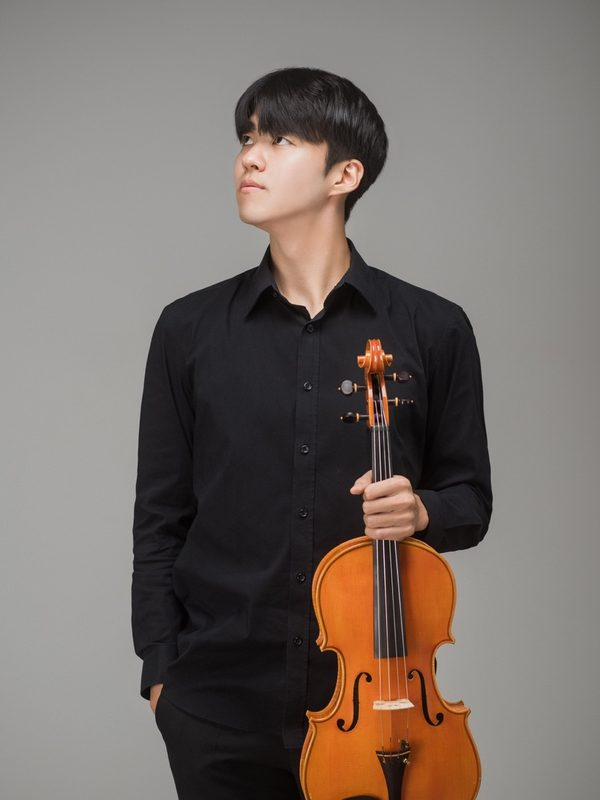
Violin
Ensemble BOAZ 단원
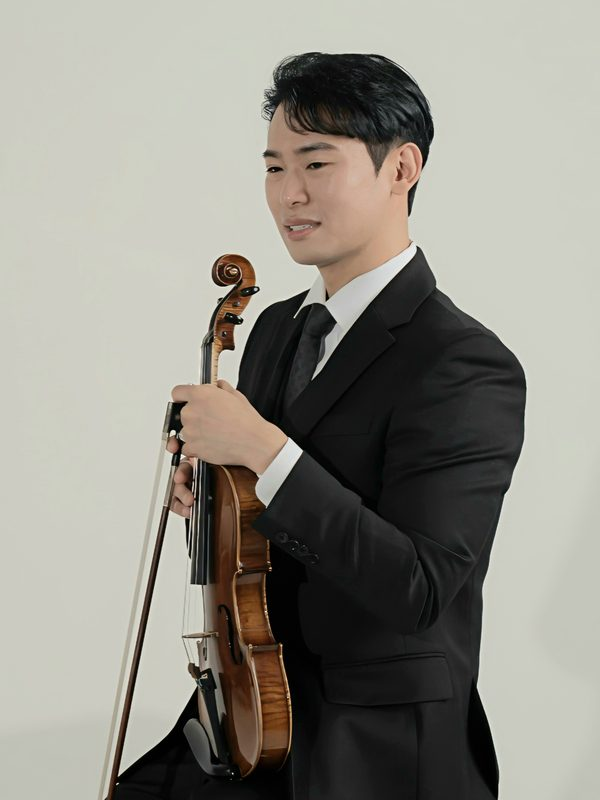
Violin
온 바이올린 대표
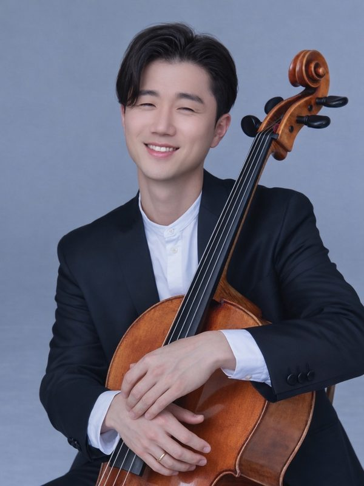
Cello
소리결 음악감독 · SoundT 앙상블 단장
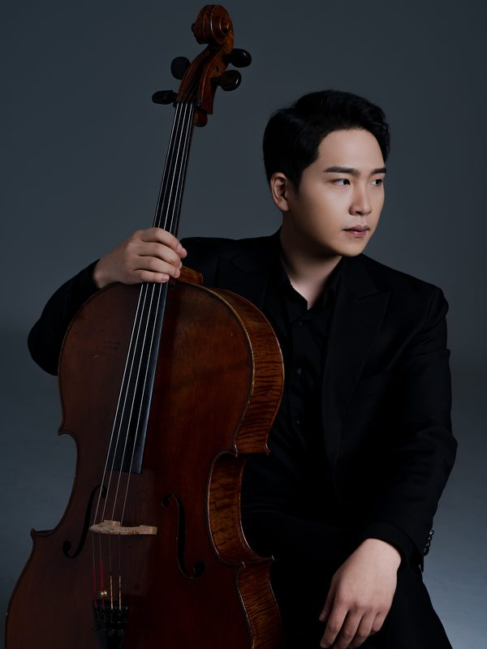
Cello
경산시립교향악단 첼로 수석
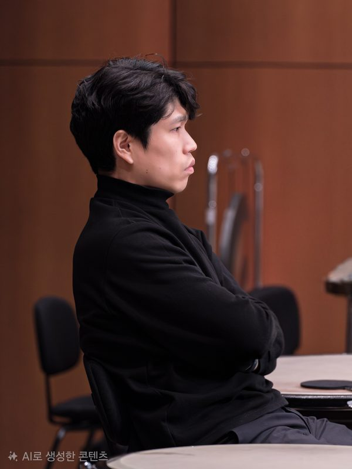
Percussion
Ensemble BOAZ 단원
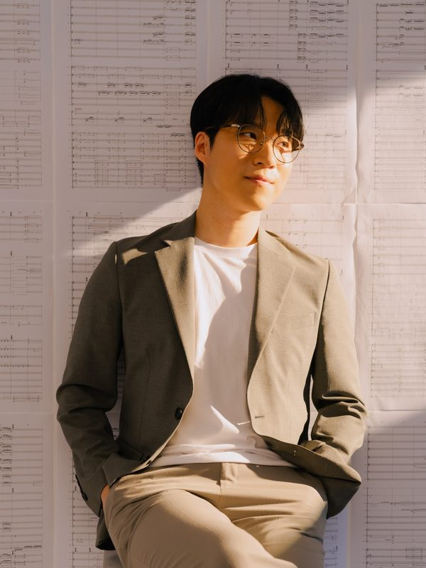
Composition
계명대학교 출강 · The BOAZ